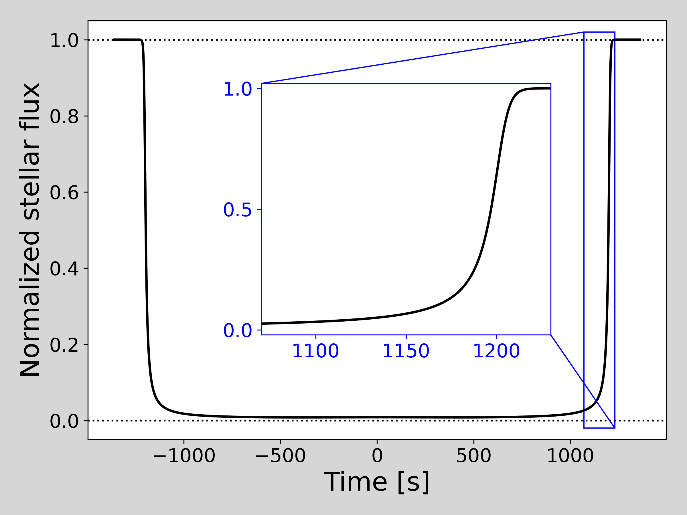
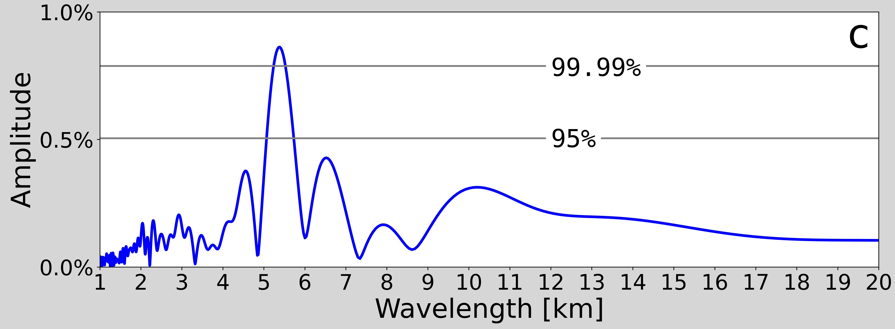

I am a fourth year Ph.D. candidate in the Department of Astronomy and a Research Assistant in the Center for Space Physics at Boston University. I work with Prof. Paul Withers at BU and Dr. Mike Person at MIT studying the atmospheres of planets in the Solar System using the technique of stellar occultations.
I received my Masters of Arts in Astronomy from BU in 2020, on my way toward earning my PhD.
I received my Bachelors of Arts in Physics & Astronomy from the University of Pennsylvania in 2018, where I worked with Prof. Gary Bernstein studying trans-Neptunian objects.
Outside of research, I write for Astrobites.org, co-host the podcast astro[sound]bites and contribute to the children's science magazine Brainspace.
Research
Upper Atmospheres of Uranus and Neptune
Uranus and Neptune are collectively called the ice giants because their atmospheres contain lots of clouds composed of ice particles. At 20 and 30 times farther from the Sun than Earth, Uranus and Neptune, respectively, receive 0.25% and 0.1% of the sunlight that hits Earth. It's unsurprising that their atmospheres are so cold.
What is surprising, is the finding from the Voyager 2 spacecraft in 1986 that Uranus' upper atmosphere is incredibly hot. The maximum temperature detected was 800 K (527 °C, 980 °F), making Uranus' upper atmosphere among the hottest of all the planets. Neptune was found to be slightly cooler but still much warmer than expected. Further complicating these results are inconsistencies in the Voyager observations that challenge their veracity. Without missions to Uranus or Neptune for decades to come, it remains extremely challenging to even identify the tempertaure of these planets, let alone uncover how they are heating so strongly. This problem is so enigmatic that some astronomers call it the ice giant "energy crisis."
In my research, I aim to better understand the upper atmosphere temperature structures of Uranus and Neptune and work toward an understanding of the energy crisis. To do this, I use a technique called stellar occultations.
A primer on stellar occultations

Figure 1. An idealized example of an occultation light curve. Image: W. Saunders
A stellar occultation occurs when a nearby planet passes in front of a distant star, from our point of view. When this occurs, the atmosphere from the planet causes starlight to refract on its path to Earth. The effect of refraction here is smearing out the light, like looking at car headlights on a foggy day. As the planet keeps moving, the starlight is refracted by the deeper parts of the atmosphere until it can no longer be seen. Then, at the end of an occultation, the star gradually becomes visible again. An example occultation light curve is shown in Figure 1.
I analyze these light curves to measurement properties of the planet's atmosphere. Since the Voyager flybys of Uranus and Neptune in the late 1980s, stellar occultations are the only way to probe upper atmospheric temperatures. In my dissertation research, I use a combination of archival and new Uranus and Neptune stellar occultations. I am working to confirm or refute the Voyager temperature findings and identify possible causes of the heating.
Here I am presenting my Mars research at the American Geophysical Union Meeting in December 2019.
In my first PhD project, I reanalyzed a historic Mars stellar occultation from 1976. This was observed by the late MIT Prof. Jim Elliot aboard NASA's Kuiper Airborne Observatory. Prof. Elliot's paper was a huge breakthrough, but he knew his data was not able to be fully processed by the computers of the day. Over 40 years later, I was able to use modern techniques on the full data set, instead of just a portion of it.
I produced extremely high-resolution temperature profiles of the middle Martian atmosphere.
Statistically significant detections of gravity waves in the middle Martian atmosphere, the most challenging region of the atmosphere to identify such wave activity. I hope atmospheric modelers will incorporate the amplitudes and wavelengths of these waves detected via my study. Figure 2 is an example of a wave detection from my paper.
I analyzed data from 8 Mars landers/rovers, which corroborated my detections of gravity waves.

Figure 2. A periodogram showing amplitudes of possible waves in the atmosphere of Mars. Here we found a 5.3 km wavelength wave with over 99.99% detection confidence. From Saunder et al. (2021)
Gravity waves are a common atmospheric disturbance that can transport energy from the lower atmosphere to the upper atmosphere. On Earth, they are known for causing "clear air turbulence" for airplanes. On many planets, gravity waves are responsible for making layers of the atmosphere warmer or colder.
Astrobites
Astrobites is a website run entirely by graduate students in astronomy and publishes daily summaries of recent astronomy publications. Astrobites is designed for undergraduate science majors to learn about the lastest work in astronomy in only a few minutes.
Some posts go beyond the traditional paper summaries, covering topics of applying for graduate school, student funding, and problems facing astronomy today. In November 2019, I published the first book review post for Astrobites, something I'm hoping becomes a new trend.
I wrote for Astrobites from January 2019 through December 2020. I currently serve as the Astrobites Undergraduate Co-Chair. Links to all my 14 Astrobite posts are below. My author page can be found at astrobites.org/author/wsaunders .
A simulation of the solar wind impinging directly onto Mercury, which might have been significant in causing Mercury to lose its mantle. (Spalding & Adams 2020) Dilhan Eryurt was the the first Turkish astronomer to work at NASA and the only woman at Goddard during her tenure. She fundamentally changed our understanding of the Sun.
I host the podcast astro[sound]bites, a spin-off of Astrobites, along with Malena Rice at Yale University, and Alex Gagliano at University of Illinois Urbana Champaign. Our new episodes every other week feature recent Astrobites centered around a theme in astronomy. We also go beyond research summaries, discussing topics about professional development, graduate student life, and more.
Working on a podcast has long been a dream of mine and I'm thrilled to be on the air. Find us on astrosoundbites.com, Apple Podcasts, Google Play, Spotify, and SoundCloud. We encourage listener feedback--email us at astrosoundbites@gmail.com.